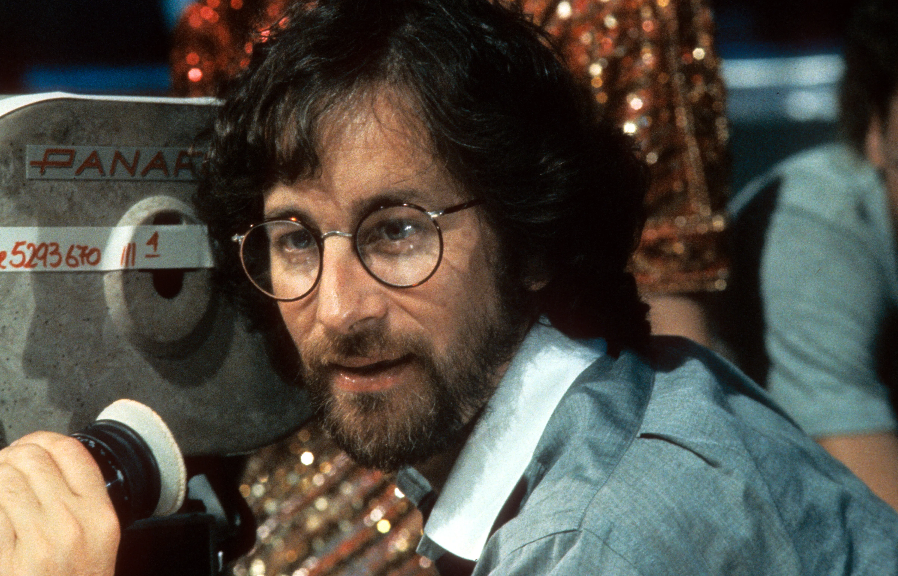
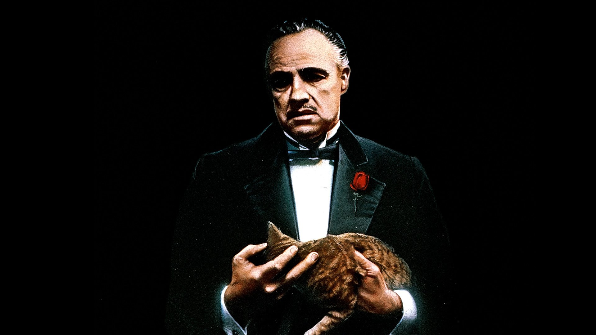
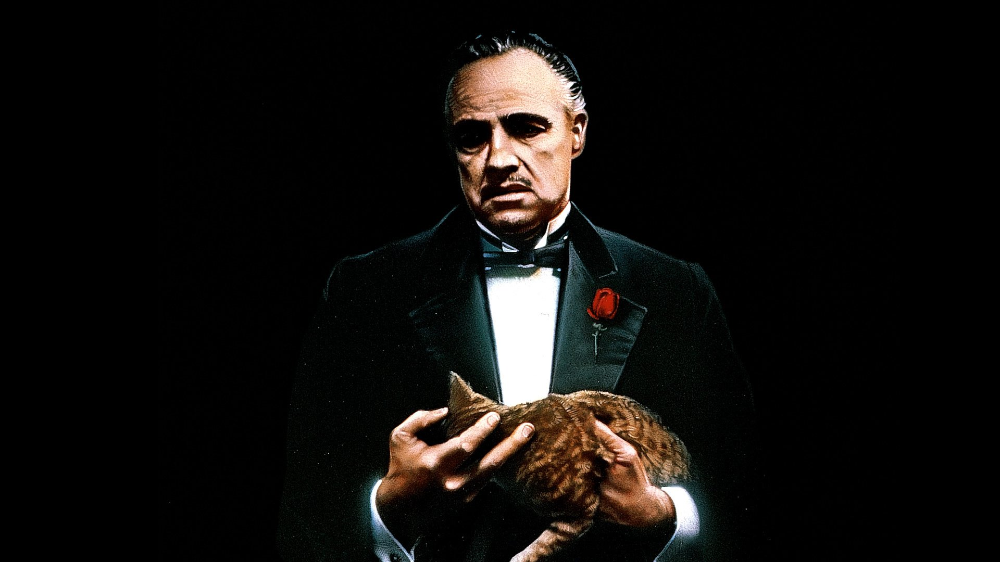

Steven Spielberg
 Steven Spielberg es sin duda alguna uno de los directores que han elevado el cine a cotas inimaginables. Nacido el 18 de diciembre de 1946, demostró su amor por el cine desde una edad muy temprana, mostrando un especial talento a la hora de grabar sus primeros cortos con cintas de Super 8. Su consagración como un director a tener en cuenta llegó con Tiburón, película cuyo rodaje fue infernal debido a las exigencias de Spielberg de rodar en alta mar sin usar decorados, disparando el presupuesto del proyecto. Posteriormente sería uno de los integrantes del Grupo de los Barbas, formado por directores de la talla de Francis Ford Coppola, Martin Scorsese o Brian de Palma, todos barbudos. Spielberg es quizás el director que mayor talento tiene a la hora de narrar con la cámara. Algunas de sus películas más destacadas son La Lista de Schindler, Atrápame Si Puedes, Tiburón o Salvar al Soldado Ryan.

 
